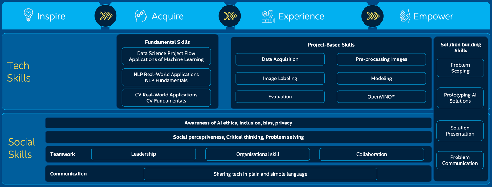

課程規劃
Table of Contents
The Learning Journey: Express Vision: 4-stage learning journey to equip youths with the mindsets and skillsets for AI-readiness.
1 Job
- 列出英特爾所有學習目標與時間，然後分區一起討論目標删減。
- 11月27日三區要報告excel討論成果及柏翰老師教案分享（表格另寄）.
- 請各區在11月25日下班前將討論好的excel檔寄到群組，謝謝
1.1 Question
- 請問是我們要交的表是否是像下圖的第二個表?
- 在計劃中預訂的課表，每個主題是100分鐘，我們有需要詳列每個目標要花多少時間嗎?還是只列出目標即可?
- L1~L3的實作是營隊自行新增的主題，不在原Intel教學內容中，事先也未討論過其教學內容為何，請問這部份要如何撰寫?
1.2 公告
抱歉打擾，由於講師群組成員尚未完全入群，有關課程的事項仍重複在此公告一次
- 目前課程分配如下圖，有任何問題請反應
各位講師好，在27日開會前，我們尚有幾項工作要完成:
Andrew Yang, Aggle Chen兩位老師，由於您二位選擇的主題剛好是此次南區分配到的任務主題，所以要請兩位老師完成以下工作:
- 撰寫南區負責主題(M1, M2, M3, L1)的教學中文目標，這部份我先寫了草稿翻譯，檔案內容如下圖，請兩位老師看一下內容是否合適，如有需要請自行修改後存檔，該檔案的連結為:
https://docs.google.com/spreadsheets/d/1KqRN3kFSrEynNsHpRNkoRVUOwkg_xtHn7pzeR8-lMzQ/edit?usp=sharing - 另外，還要請兩位老師協助列出編刪意見，將M1, M2, M3, L1的教學目標與教學內容刪減到適合在100分鐘內完成，請將刪減建議貼到群組上，這部份我們在27日要上台報告，麻煩兩位老師了。
最後，也請負責其他講師研究您所負責的主題，在27日開會時提出討論。
- 撰寫南區負責主題(M1, M2, M3, L1)的教學中文目標，這部份我先寫了草稿翻譯，檔案內容如下圖，請兩位老師看一下內容是否合適，如有需要請自行修改後存檔，該檔案的連結為:
2 AI4Y南區講師分配
主題分配原則: 上午/下午/晚
| 負責老師 | 南區負責主題 | |||
|---|---|---|---|---|
| A. | Day1 | M1(簡介), M2(統計數據) | Andrew Yang | M1, M2 |
| B. | Day1 | M3(自然語言), L1(實作) | Aggle Chen | M3, L1 |
| C. | Day1 | L1(實作) | Andrew Yang | L1 |
| D. | Day2 | M4(計算機視覺), M5(數據採集) | chi chin lee | |
| E. | Day2 | M6(影像處理), L2(實作) | chi chin lee | |
| F. | Day2 | L2(實作) | Aggie Chen | |
| G. | Day3 | M7(影像標記), M8(模型建立), L3(實作) | 趙小銘 | |
| H. | Day3 | M9(評估), L3(實作) | 趙小銘 | |
| I. | Day3 | L3(實作) | 何錫霖 | |
| J. | Day4 | M10(OpenVino) | lala | |
| K. | Day4 | M11(範例集練習-講座), M11(範例集練習-實作) | 顏永進 | |
| L. | Day4 | L3(實作) | 何錫霖 | |
| M. | Day5 | 發表1, 發表2 | lala |
3 課程內容
3.1 Module 1: Overview
3.1.1 教材
3.1.1.1 PPTX
- [Slides] Module 1.pptx (49 slides)
- AI game clue.pptx (6 slides_)
3.1.1.2 DOCX
- Research Template.docx
3.1.2 時間
- 100分鐘: 08:00 - 10:10
3.1.3 主要活動 240 MINUTES
- The AI Game + relection: 40 mins
- Kimchi Introduction
- System Mapping + Loop實作: 15 mins
- Project Vegita: Project Vegita
- Create a Future Job Ad: 50 mins, (Ideally the research should not take more than 20 minutes. However youth can be given some extra time provided the same is adjusted for in the presentation session. The total time to be taken for both the parts of the activity should not exceed 40 mins)
- Game of Ethics: 30 mins
3.2 Module 2: Statistical Data
3.2.1 教材
3.2.1.1 PPTX
- [Slides] Module 2.pptx (100 slides)
3.2.1.2 DOCX
- Problem Scoping Template.pptx
3.2.2 時間
- 100 mins: 10:20-12:00
3.2.3 主要活動 120 MINUTES
- AI Introduction
- AI Project Cycle Case: Demo with Project Vegita
- Introduction to Problem Scoping and the 4Ws framework
- Data Acquisition
- Data Exploration
- Modelling
- Evaluation
- Reflection
- Introduction to Problem Scoping and the 4Ws framework
- Problem Statement Template
- Problem Scoping Template.pptx
- Problem Scoping Template.pptx
- Data Acquisition
- Data Exploration
- Modeling
- Introduction Neural Networks: 60 mins
- Model Evaluation
3.3 Module 3: NLP
3.3.1 教材
- [Slides] Module 3.pptx (65 slides)
3.3.2 時間
- 100 mins
3.3.3 主要活動 120 MINUTES
- Human v.s. Computer Language
- Data Processing
- [Optional Activity] Use the worksheet given!
使用:[Worksheet] Text Processing Activity.docx - Bag or Words
- Understanding Vectors
- [自然語言處理基礎] 文本預處理(II)：正規化，就是一視同仁
- LeeMeng - 進入 NLP 世界的最佳橋樑：寫給所有人的自然語言處理與深度學習入門指南
- Day 7: 親手寫個檢索系統吧（ㄧ）文件預處理
3.3.4 DEMO
1: # coding: utf-8 2: import sys 3: import json 4: from gensim.models import doc2vec 5: from collections import namedtuple 6: 7: 8: # Load data 9: raw_doc = ["I love machine learning. Its awesome.", 10: "I love coding in python", 11: "I love building chatbots", 12: "they chat amagingly well"] 13: 14: 15: # Preprocess 16: docs = [] 17: analyzedDocument = namedtuple('AnalyzedDocument', 'words tags') 18: for index, text in enumerate(raw_doc): 19: words = text.split() 20: docs.append(analyzedDocument(words, [index])) 21: 22: 23: # Train 24: model = doc2vec.Doc2Vec(docs, vector_size=20, window=300, min_count=1, workers=4, dm=1) 25: 26: 27: # Save 28: model.save('doc2vec.model') 29: 30: 31: # Load 32: model = doc2vec.Doc2Vec.load('doc2vec.model') 33: print(model.docvecs[1].shape) 34: print(model.docvecs[1])
(20,) [-0.01887621 0.01302744 -0.02849153 0.0131293 0.02904045 -0.04056058 -0.04169167 -0.04981408 0.02464924 -0.04563693 0.02922578 0.0340294 -0.03257207 -0.02262998 -0.00628912 0.00822178 -0.00741135 -0.04270934 -0.01805406 0.00866313]
3.3.5 jeiba DEMO
- https://leemeng.tw/shortest-path-to-the-nlp-world-a-gentle-guide-of-natural-language-processing-and-deep-learning-for-everyone.html
- Word Embedding 編碼矩陣
- DOC2VEC gensim tutorial
- Doc2Vec模型的介紹與gensim中Doc2Vec的使用
- 如何訓練 Doc2Vec 模型
1: import jieba.posseg as pseg 2: 3: text = '我是王小明，在台南讀書的學生，我喜歡喝咖啡、不喜歡讀書' 4: words = pseg.cut(text) 5: wordList = [] 6: for w, f in words: 7: wordList.append(w) 8: print(w, f) 9: 10: print(wordList) 11: word_index = { 12: word: idx 13: for idx, word in enumerate(wordList) 14: } 15: print(word_index) 16: print(wordList) 17: print([word_index[w] for w in wordList])
我 r
是 v
王小明 nr
， x
在 p
台南 ns
讀書 n
的 uj
學生 n
， x
我 r
喜歡 v
喝咖啡 nr
、 x
不 d
喜歡 v
讀書 n
['我', '是', '王小明', '，', '在', '台南', '讀書', '的', '學生', '，', '我', '喜歡', '喝咖啡', '、', '不', '喜歡', '讀書']
{'我': 10, '是': 1, '王小明': 2, '，': 9, '在': 4, '台南': 5, '讀書': 16, '的': 7, '學生': 8, '喜歡': 15, '喝咖啡': 12, '、': 13, '不': 14}
['我', '是', '王小明', '，', '在', '台南', '讀書', '的', '學生', '，', '我', '喜歡', '喝咖啡', '、', '不', '喜歡', '讀書']
[10, 1, 2, 9, 4, 5, 16, 7, 8, 9, 10, 15, 12, 13, 14, 15, 16]
3.4 Module 4: Computer Vision
3.4.1 教材
- [Facilitator] Module 4.docx (37 slides)
3.4.2 主要活動 60 MINUTES
- Introduction to Computer Vision
- How do computers see images?
- Convolution operator
- Models for solving CV problems
3.5 Module 5: Data Acquisition
3.5.1 教材
- [Slides] Module 5.pptx (29 slides)
- [Work Files - Coach] Module 5.rar
- [Work Files - Youth] Module 5.rar
3.5.2 主要活動 270 MINUTES
- Introduction to Python
- 利用python從網路下載dataset?
- Self-directed Learning: Learn how to obtain and process data using Python and the pandas library
3.6 Module 6: Data Exploration
3.6.1 教材
- [Slides] Module 6.pptx (23 slides)
- [Work Files - Youth] Module 6.zip
- [Work Files - Coach] Module 6.rar
3.6.2 主要活動 300 MINUTES
- Exploring and Visualizing Data
- Notebook: Basic Data Processing and Visualization
- Notebook: Handling Erroneous and Missing Data
- Notebook: Data visualization and processing for Fashion MNIST
3.7 Module 7: Data Exploration (Image Labeling)
3.7.1 教材
- [Slides] Module 7.pptx (10 slides)
3.7.2 主要活動 90 MINUTES
- Types of AI models
3.8 Module 8: Modeling
3.8.1 教材
- [Slides] Module 8.pptx (56 slides)
- [Work Files - Youth] Module 8.rar
3.8.2 主要活動 480 MINUTES
- CNN
- feature map
- Pooling Layer
- SVM
- Notebook: Introduction to OpenCV library using Jupyter Notebook
- CNNs for the Fashion MNIST dataset
3.9 Module 9: Evaluation
3.9.1 教材
- [Slides] Module 9.pptx (17 slides)
- [Work Files - Youth] Module 9.rar
3.9.2 主要活動 120 MINUTES
- Notebook: Model Evaluation for Fashion MNIST
- Introduction
- Recap: Evaluation methods
- Self-directed learning: Model Evaluation for Fashion MNIST
- Recap
- quiz
- Reflection
3.10 Module 10: OpenVINO™
3.10.1 教材
- [Slides] Module 10
- [Work Files - Youth] Module 10
- [Work Files - Coach] Module 10
3.10.2 主要活動 120 MINUTES
- Introduction
- Introduction to OpenVINO™ using jupyter notebooks
- Reflection
3.11 申請強制險
- 申請書
- 印章
- 行照
- 駕照
- 診斷證明書
- 醫療單據
- 郵局存摺影本
4 Inspire
Get excited with the possiblities of AI and discuss pertient issue aroundAI (e.g. ethics, bias etc.)
4.1 Contents (4 hours)
4.1.1 Overview(1)
4.2 Tech Skills
null
4.3 Social Skills
- Awareness fo AI ethics, inclusion, bias, privacy
- Social Perceptiveness, Critical thinking, Problem solving
- Teamwork: Leadership
5 Acquire
Acquire basic concepts in AI and be introduced to the three domains of AI - Statistical Data, Natural Language Processing and Computer Vision.
5.1 Contents (5 hours)
5.1.1 AI domain-specific concepts
5.1.1.1 Statistical Data (SD)(2)
5.1.1.2 Computer Vision (CV)(3)
5.1.1.3 Natural Langauge (NLP)(4)
5.2 Tech Skills
5.2.1 Fundamental Skills
- Data Science Project Flow
- Applications fo Machien Learning
- NLP Real-World Applications
- NLP Fundamentals
- CV Real-World Applications
- CV Fundamentals
5.3 Social Skills
- Awareness fo AI ethics, inclusion, bias, privacy
- Social Perceptiveness, Critical thinking, Problem solving
- Teamwork: Leadership
- Communication: Sharing tech in plain and simple language
6 Experience
Delve deeper into Computer Vision through hands-on activities. Complete the Fashion MNIST challenge and develop skills in data collection, model trainiing and code modification.
6.1 Contents (23 hours)
6.1.1 Worked Example
6.1.1.1 Data Acquisition(5.)
6.1.1.2 Data Exploration (Pre-proccessing Images)(6.)
6.1.1.3 Data Exploration (Image Labeling)(7.)
6.1.1.4 Modeling(8.)
6.1.1.5 Evaluation(9.)
6.1.2 Face Detection
6.1.2.1 OpenVINO(10)
6.2 Tech Skills
6.2.1 Fundamental Skills
- Data Science Project Flow
- Applications fo Machien Learning
- NLP Real-World Applications
- NLP Fundamentals
- CV Real-World Applications
- CV Fundamentals
6.2.2 Project-Based Skills
- Data Acquisition
- Pre-processing Image
- Image Labeling
- Modeling
- Evaluation
- OpenVINOTM
6.3 Social Skills
6.3.1 Awareness fo AI ethics, inclusion, bias, privacy
6.3.2 Social Perceptiveness, Critical thinking, Problem solving
6.3.3 Teamwork
- Leadership
- Organisational skill
6.3.4 Communication
Sharing tech in plain and simple language
7 Empower
Create social impact projects with the skills learnt and influence others to be AI-ready.
7.1 Contents (24 hours)
7.1.1 (11)
7.1.1.1 Intorduction to Use Cases
- AI Medical Exam
- AI Security Support System
- Car Detection from Traffic Data
- Emotion Recognition
- Energy Saving System in Classroom
- AI Security System for Blind
- Smoke and Fire Detection
7.1.1.2 Brainstorming Solutions
7.1.1.3 Prototyping Solutions
7.1.1.4 Solution Presentation
7.1.1.5 Deploying AI solutions
7.2 Tech Skills
7.3 Social Skills
8 Schedual
8.1 Stage 1: Inspire
8.1.1 Module 1 (240): Overview
8.1.1.1 Class
Day1, Class 1, Class 2
8.2 Stage 2: Acquire
8.2.1 Module 2 (120): Statistical Data
8.2.1.1 Class
Day 1
8.2.2 Module 3 (120): Natural Language Processing
8.2.3 Module 4 (60): Computer Vision
8.3 Stage 3: Experience
8.3.1 Module 5 (270): Data Acquisition
8.3.2 Module 6 (300): Data Exploration (Preprocessing Images)
8.3.3 Module 7 (90): Data Exploration (Image Labeling)
8.3.4 Module 8 (480): Modeling
8.3.5 Module 9 (120): Evaluation
8.3.6 Module 10 (120): OpenVINO™
8.4 Stage 4: Empower
8.4.1 Module 11 (24h)– Empower (Social Impact Project Creation)
8.5 課表
| Class | Day 1 | Day 2 | Day 3 | Day 4 | Day 5 |
|---|---|---|---|---|---|
| 08:30-10:10 | Module 1 | Module 4 | Module 7 | Module 9 | |
| 10:20-12:00 | Module 2 | Module 5 | Module 8 | Module 10 | |
| 13:30-15:10 | Module 2 | Module 5 | Module 8 | Module 11 | |
| 15:20-17:00 | Module 3 | Module 6 | Module 8 | ||
| 18:30-20:10 | Module 6 | Module 8 |
9 Skills Outcome Map

Figure 1: Skills Outcome Map
10 Install openvino for 403 Macmini
- copy CMake to /Application